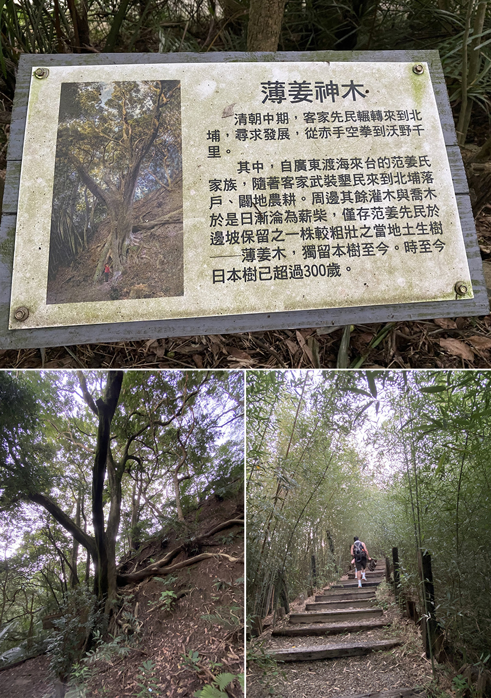

中秋連假是疫情沒那麼緊繃時遇到的第一個連假，想要出遊但又怕群聚，因此在規劃時排除所有室內行程。另慶幸沒有往宜蘭跑，往宜蘭的方向大塞車.......。
上kkday買了門票。從中和出發，約十一點半的時候到達綠世界。綠世界位於314新竹縣北埔鄉隘子7鄰20號。聯絡電話：03 580 1000；網址：https://www.green-world.com.tw/ 。
進到園區後有三張告示牌標示園區內活動的時間，因為我們到綠世界的時間已經中午，因此先去百年古厝吃中餐。
園區有點大， 先買遊園車票坐到餐廳附近，網友們推薦的玩法好像都是先搭車到最裡面然後再走下來。
百年古厝果然看起來有老。從菜單可看出就是家常菜色，古厝裡面也有位置但已經坐滿，疫情期間坐在通風處也比較好。看了網友的評價對餐點美味期待太高，吃完的感想是普普通通但不會不好吃也不會很鹹。飯後給兒子來一根在淡水吃過就心心念念的雞蛋冰，沒有任何標示的雞蛋冰，反正不乾不淨吃了沒病。
來到一區有超多蝴蝶，照片沒有拍出盛況，出乎我意料的我只看到一隻蟲，接下來就是各種動植物欣賞，但兒子對地球上的生物真的很冷淡，很快就覺得無聊，只能再度用食物安撫。
園區裡很多這種有按鈕的設施，會有解說或聲音，但很多都壞了，看起來沒有在維護。
 |
有一區可以跟動物近距離接觸，這雞的髮型就派ㄟ喔(台語發音)。仙人掌公園，多肉植物，有毒植物，亞馬遜生物，我兒都沒興趣，不管去哪最吸引他的就是小石頭，樹枝，落葉 ... 。
鵜鶘餵食秀感覺比較有趣，但兒子依然沒興趣，就讓他在大草皮放風。
快離開的時候經過賣蜂蜜的攤販，今天遊客本來就不多，又接近閉園時間，對方生意相當慘澹的感覺，老闆很熱情的招呼我們，拿起蜂箱裡的一片巢框，示範給我們看蜂蜜怎麼弄出來的，最後還用花粉跟蜂蜜調了一罐很濃的蜂蜜水給我兒子喝，兒子喝得很開心說還要，剛好旁邊有一個阿桑在賣蜂蜜水，買了一罐，兒子說：怎麼沒味道？對，懂喝啊你！因為阿桑賣的蜂蜜水的蜂蜜只有加一點點啦.. 走的時候敵不過老闆的熱情，買了一罐花粉回家。
|  |
最後去尋找薄姜神木，因為下雨天的關係又接近五點了，林裡蠻暗的，最後找到了神木位置。普通到我已經在它面前，還在找神木在哪兒？畢竟一般人對神木的刻板印象就是要參天巨木吧？最後開始被蚊子攻擊，逃命似的踏上歸途。
結語：若小朋友喜歡小動物的很推來這裡，因為路上可以看到動物在走，沒有腳力的小朋友建議帶推車，防蚊液一定要帶。